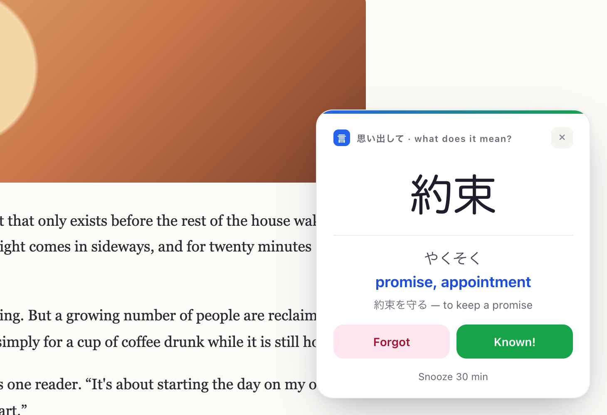
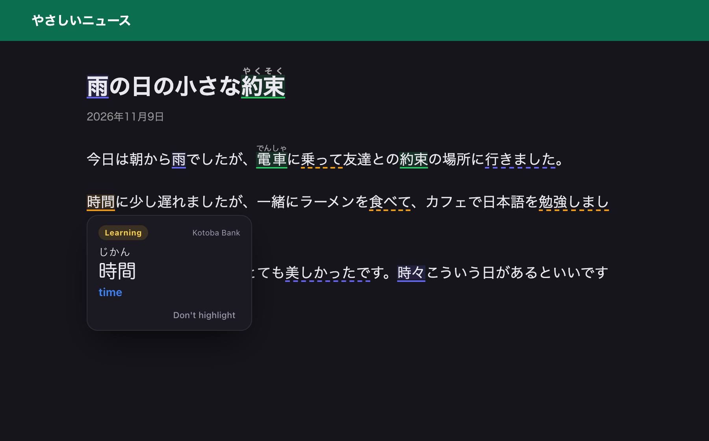

Learn Japanese vocabulary while you browse.
A personal word bank, flashcards that pop up on the page you're reading, and highlights for every word you've already collected — on any Japanese website.
Free & open source · No account · Your data never leaves your browser

Read real Japanese. Keep what you meet.
Every feature shortens one loop — so the words you collect keep coming back until they stick.
Reviews that happen while you browse
- A card finds you. Every few minutes a kanji slides in on whatever page you're on — news, video, your inbox.
- Five seconds. Recall, reveal, grade yourself, and you're back to what you were doing.
- Smart repetition. Words you forget come back more often; words you know, less.
- On your terms. Snooze it, drag it anywhere, or tap a kanji to see its readings.

See what you know — on any page
- Your words, underlined. Open any Japanese site and every word from your bank lights up, coloured by how well you know it.
- Conjugations too. 食べた and 行った are recognised as forms of 食べる and 行く.
- Hover for a reminder. Reading and your meaning, instantly.
- Furigana-friendly. Works on sites like NHK News Easy, and never changes the page's HTML.

Everything for your vocabulary, in one place
The pop-ups and highlights are powered by a full word bank — with a proper place to study, browse and dig into kanji.
Focused study sessions
When you want a real session, the Study tab gives you one card at a time — big, calm, and fast to grade.
- Kanji → Meaning and Meaning → Kanji, tracked separately
- Keyboard-first:
Spaceflip ·123grade ·←→ - Undo, pause, and a results screen with a "review forgotten" round

Every word you've ever saved
Search, filter by status or collection, edit, and choose which words are in rotation — one switch per word.
- New · Learning · Mastered, at a glance
- Collections — a word can live in several
- Bulk-add to a collection, export / import backups

See how every word is going
How often each word has come up, when you last saw it, and how often you got it right — so you know exactly what needs work.
- Shown, last seen, Know / Hint / Forgot per word
- A colour-coded recall ratio, red to green
- Words you forget come back more often, automatically


Up and running in a minute
Not on the Chrome Web Store yet — install it as an unpacked extension.
Download the .zip from the latest release and unzip it somewhere permanent.
Open chrome://extensions and switch on Developer mode.
Click Load unpacked and choose the unzipped folder.
Pin it, click the icon → Open bank, and add your first words.
Your words stay yours
Nothing to sign up for.
Everything is stored in your browser. Back up with a JSON export.
No analytics, no telemetry. Page text is read locally and never sent anywhere.
Read the full privacy policy.